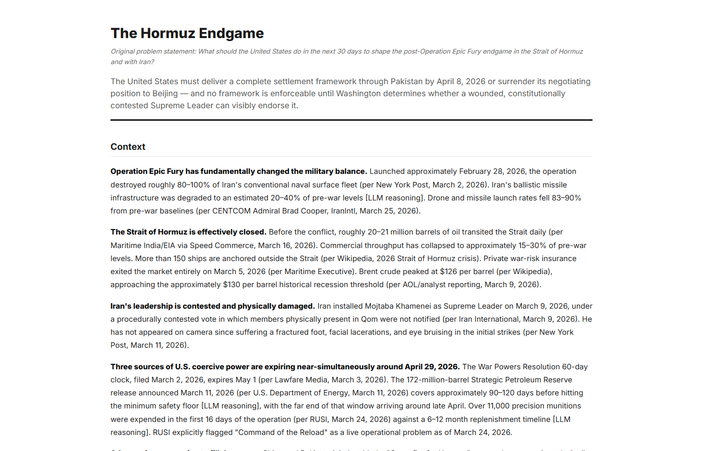
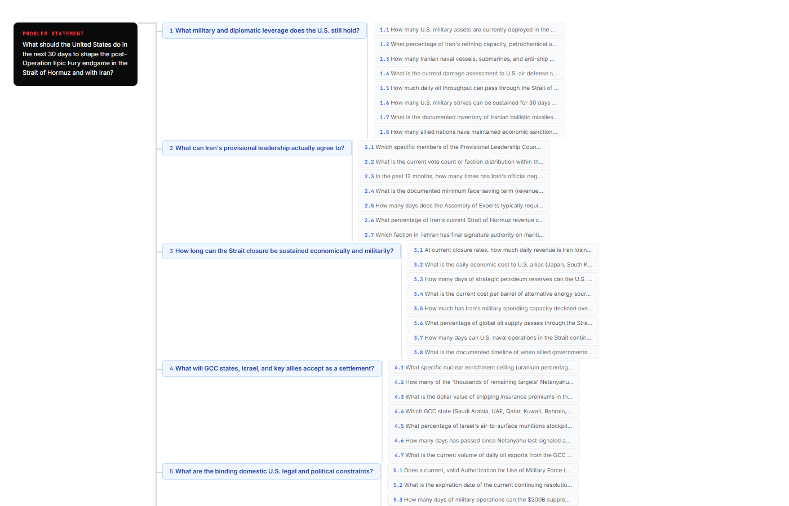
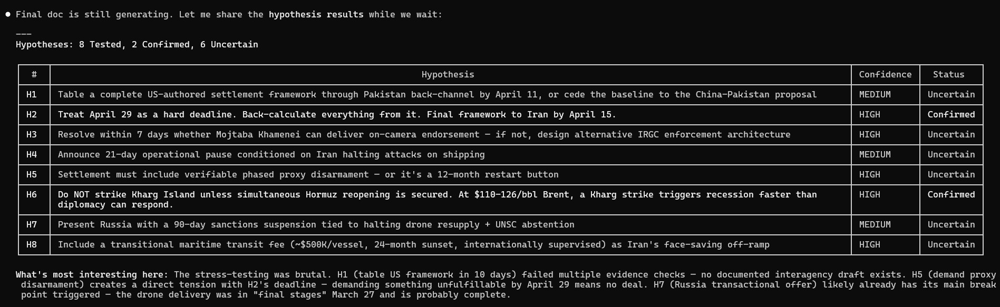
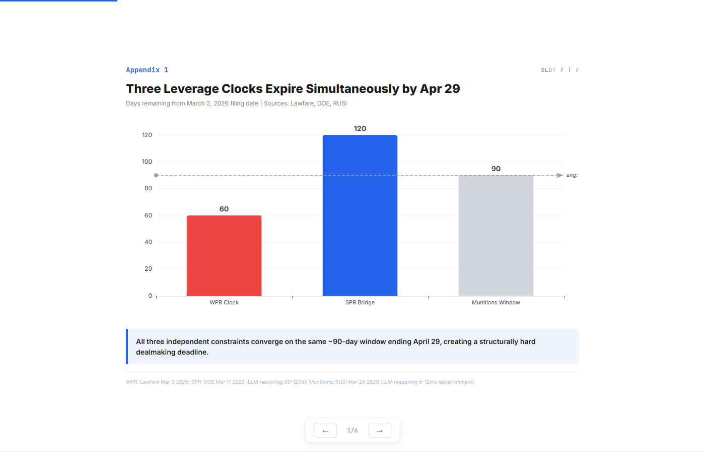
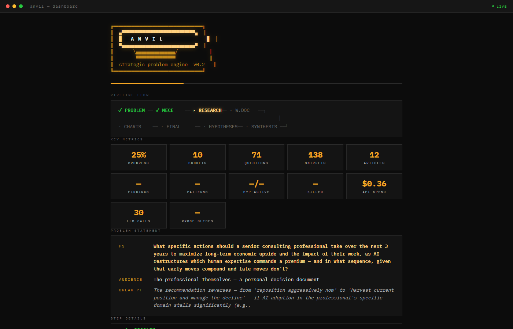

╔══════════════════════════════════════╗║ ▄▀▀▀▀▀▀▀▀▀▀▀▀▀▀▀▀▀▀▀▀▀▀▀▀▀▀▀▀▄ ║
║ █ A N V I L █ ║
║ ▀▄▄▄▄▄▄▄▄▄▄▄▄▄▄▄▄▄▄▄▄▄▄▄▄▄▄▄▄▀ ║
║ ╲▄▄▄▄▄▄▄▄▄▄▄▄▄▄▄╱ ║
║ ▀▀▀▀▀▀▀▀▀▀▀▀▀▀▀ ║
║ strategic problem engine ║
╚══════════════════════════════════════╝
I Built a Tool That Runs the Method a Strategy Team Uses — in 20 Minutes
If you're a strategy professional who has felt the gap between what AI promises and what it actually delivers for real strategy work — this is an attempt to close it.You know the moment.
You're in the car to the airport. Someone senior wants a view on something by tomorrow. You have a thesis in your head, but no one to throw it against. No analyst to run the numbers. No associate to check if your framing even holds up.
So you open ChatGPT. You type your question. You get back a five-paragraph essay that sounds confident and says nothing. No structure. No sources. No opposing view. No sense of what would flip the answer.
Just vibes dressed up as analysis.
That moment is why I built Anvil.
What Anvil Is
Anvil is a strategic problem-solving engine with Claude as your co-problem-solver. You give it a hard question — the kind that lands on a VP's desk or a CEO's agenda — and Claude walks you through the full problem-solving method. Not a summary. Not a chat. The actual method, step by step, with you in the driver's seat.
There are two modes:
Guided — Claude pauses at every step. Shows you what it found, what patterns it sees, what hypotheses survived. You push back, inject your own data, challenge the framing, redirect the analysis. Essentially running your entire strategy project with Anvil as your co-pilot. Autopilot — Claude runs end-to-end and narrates as it goes. You come back to a finished brief. Good for speed. But the guided mode is where the real work happens.Under the hood: ~45 LLM calls across two models (Claude Sonnet for reasoning, Haiku for fast operations), 120+ web search queries via DuckDuckGo, 50+ full articles fetched and read, 6 parallel research workers, an 8-step pipeline with structured quality gates at every stage. Total API cost: $2-4 per run. About 20 minutes.

The Problem With Every Tool You've Tried
ChatGPT / Deep Research. You type a question. You get a long essay. It reads well. But there's no decomposition — it didn't map the problem space before jumping to conclusions. No hypothesis testing — it never tried to kill its own arguments. And there's no way to steer it mid-analysis. You get one pass. Take it or leave it. Claude in a chat window. Better reasoning. But the context window is a cage. You can't hold a 10-bucket MECE decomposition, 30 research briefs, a synthesis layer, a hypothesis tree, and a final document in one conversation. And there's no persistent state — close the tab, lose the work. Perplexity / search-first tools. Good for "what happened" questions. Useless for "what should we do" questions. Strategy isn't a search problem. It's a decomposition problem, then a research problem, then a synthesis problem, then a judgment problem. These tools do step two and skip the rest. A strategy team. Does all of this. Takes two weeks. And you can't run it at 11pm on a Sunday when the insight hits you.Anvil is not the team. It doesn't have client context, institutional history, or the judgment that comes from having been wrong before. What it does is compress the structured thinking work — decomposition, research, synthesis, hypothesis testing — so the judgment work can start faster. And in guided mode, your judgment is in the loop at every step.
How It Actually Works
The pipeline has eight steps. Each one has a specific job, a specific output, and a specific quality gate. In guided mode, Claude pauses after each step — shows you what it found, explains what surprised it, and asks what you want to change before continuing.

Step 0: Problem Statement
This is the most important step. Anvil doesn't just accept whatever you type. Claude acts like a senior advisor in the first meeting.
You say "How should we respond to the Hormuz closure?" Claude pushes back: that's one-sided framing. "Respond" presumes defense. Should this be open to finding an opportunity? What's the timeframe? Who acts on this? What number would flip the recommendation?
In guided mode: This is a real conversation. You go back and forth with Claude until the problem statement is sharp. You might start with a vague question and iterate three times before the PS is locked. Claude won't move on until you confirm.The output is a SMART problem statement with a decision sensitivity break point — the specific condition under which the opposite answer becomes correct.
Here's an actual one Anvil produced:
"What actions must the United States take in the next 60 days to optimize its strategic position as the Strait of Hormuz closure reshapes global energy flows, alliance structures, and the Iran deterrence calculus?"
Decision sensitivity: The recommendation reverses if (a) closure resolves within 15-20 days, (b) oil prices stabilize below $100/bbl without intervention, or (c) allied coalition fractures — suggesting unilateral action carries more cost than the crisis itself.
Notice: "optimize," not "respond." The framing is neutral. The break point is quantified.
Step 1: MECE Decomposition
Anvil breaks the problem into 4-10 mutually exclusive, collectively exhaustive buckets. Each bucket gets 5-8 sub-questions. An adversarial audit checks for missing dimensions, and a separate overlap check flags any bucket pairs with conceptual overlap.
In guided mode: Claude shows you the buckets and asks: "Anything missing? Any overlap? Should I add a bucket about X?" You might say "You're missing the domestic politics angle" or "Merge buckets 3 and 7, they're covering the same ground." Claude adjusts and re-runs.For the Hormuz case, this produced 10 buckets with 76 sub-questions. Every sub-question is investigative, not prescriptive.

Step 2: Research
This is where it gets real. Anvil runs live web research — not "LLM knowledge."
Per bucket: 10-15 targeted search queries, DuckDuckGo news + web results, full article fetch from non-paywalled sources (6 parallel workers). For a 10-bucket problem, that's 120+ search queries, 135+ snippets, and 50+ full articles actually read and synthesized.
In guided mode: Before research begins, Claude shows you the research requirements and asks how you want to proceed:- Public only — proceed with web sources
- Upload files — inject your own data: internal reports, financials, competitive intelligence. These get marked as HIGH confidence evidence
- Selective — provide specific data for some items, let Anvil research the rest
This is where Anvil becomes more than a research tool. You bring what you know. Anvil researches what you don't. The synthesis combines both.
Every number gets a chain of custody. Source data is tagged (per source, date). The model's own reasoning is tagged [LLM reasoning]. No pretending.
Step 3: Working Document + Research Debrief
Research findings get compiled into a per-bucket narrative. Bottom line up front for every question. A 2-5 page research debrief summarizes what was found, what's uncertain, and what remains thin.
In guided mode: Claude presents the debrief and asks for your reaction. "The research on bucket 3 is thin — we couldn't find good public data on actual inventory levels. Do you have internal numbers you can share?" You type your answer, and it gets incorporated as high-confidence evidence.Step 4: Synthesis
This is where the engine earns its keep. It reads across all buckets and pulls out:
- Convergence: Multiple independent findings point the same direction
- Tension: Two findings from different buckets contradict each other
- Surprise: Something breaks the expected pattern
- Binding constraint: One finding that dominates everything else
- Cascade: Finding A triggers consequence B in a different bucket
This is exactly what a chat window can't do. The context isn't big enough to hold 10 buckets, 50 findings, and 8 patterns simultaneously. Anvil can because it holds state in persistent files. And in guided mode, you're the tenth analyst reading across the buckets.
Step 5: Hypotheses
Anvil generates 5-8 testable hypotheses that directly answer the problem statement. Then it tries to kill each one.
Six-point stress test per hypothesis: evidence-claim mismatch, break point plausibility, internal consistency, confidence calibration, steel-man counterargument, and diagnosticity.
The survivors become the backbone of the final brief. The dead go to the Hypothesis Graveyard.
In guided mode: Claude shows you the hypothesis table — confirmed, uncertain, killed — and asks: "Do you have evidence that would change any of these?" You might say "H3 is wrong — I know from internal data that the actual number is X, not Y." Claude re-runs the stress test with your input. Or you add your own hypothesis: "Test this: what if the real risk isn't supply, it's insurance?"The governing hypothesis gets generated from survivors only. Not before. The answer emerges from tested evidence, not from a first guess that never got challenged.

From the OpenAI commoditization run — a killed hypothesis:
Rejected: Proprietary AI platforms constitute a durable competitive moat. AI efficiency gains transfer to clients within 1-2 contract cycles. Companies actively marketing AI-driven speed as a benefit are the precise mechanism that accelerates this transfer.
That sounds plausible. A chatbot would present it as an option. Anvil killed it with specifics.
Step 6: Final Document
A 3-5 page strategic brief. Fixed structure: title as conclusion headline, context, numbered beliefs, decisions required with owners and deadlines, hypotheses tested and rejected, data gaps with providers and deadlines.
In guided mode: Claude shows you the draft and asks for feedback. "The section on competitive response is too generic — sharpen it with the specific numbers from bucket 4." Claude rewrites and the feedback actually changes the output.Every claim carries its source citation through. Unsourced numbers get marked (unverified).
Step 7: Appendix
Proof charts. Every claim with a hard number maps to exactly one chart. Chart type chosen by data relationship — ranking gets a bar chart, change over time gets a line, part-to-whole gets a donut.
Each chart makes one point obvious in 3 seconds. If you have to explain the chart, the chart failed.

What the Output Actually Looks Like
Here are excerpts from two real runs. Unedited.
Run 1: Hormuz Crisis
Title: "The Hormuz Endgame" Opening thesis: The United States must deliver a complete settlement framework through Pakistan by April 8, 2026 or surrender its negotiating position to Beijing — and no framework is enforceable until Washington determines whether a wounded, constitutionally contested Supreme Leader can visibly endorse it. One of the beliefs: U.S. allies are bleeding $200-300 million per day in extra energy costs. Allied strategic reserves buy 90-120 days of buffer — putting the breaking point squarely in June 2026. A killed hypothesis: Rejected: Allied coalition will hold beyond 30 days. Historical precedent from 2003 and 2011 shows allied patience erodes within 2-4 weeks when domestic energy costs spike. A data gap: Actual IRGC command-and-control status post-strikes. Provider: CENTCOM intelligence assessment. Required by: before any ceasefire framework is tabled. Without this, every assumption about Iran's capacity to enforce a deal carries low confidence.That last line is important. The document tells you what it doesn't know. It tells you who can fill the gap and by when. It doesn't pretend certainty it doesn't have.
Run 2: OpenAI Commoditization
Title: "OpenAI's Margin Trap" Opening thesis: OpenAI must execute a forced-march pivot from consumer subscriptions to high-ACV enterprise workflows in the next 12-18 months — specifically by converting its 2 billion daily prompts into proprietary fine-tuned artifacts before the inference margin compresses to zero. The core insight: The company's 40-60% gross margins on inference are structurally temporary. Open-weight models are closing the capability gap on a 6-month cycle. The moat isn't the model — it's the workflow data generated by 100M+ weekly users, which no competitor can replicate.The Situations This Is Built For
You're preparing for a board meeting. You have a thesis but need it pressure-tested. Run Anvil in guided mode — it decomposes the question, researches every angle, and you inject your internal data at step 2. By the time you're at hypotheses, you're debating the analysis with Claude, not waiting for a deck. You're a founder wrestling with a hard call. Should you raise at this valuation? Should you enter this market? Run Anvil, inject your financials and competitive data, and get a structured brief with numbered decisions and explicit break points. The hypothesis graveyard tells you what you considered and why it didn't hold. You're managing a crisis. Things are moving fast. You need structured options, not a brainstorming session. Anvil gives you a decision tree with deadlines, dependencies, and consequences of inaction. In guided mode, you can redirect the analysis as new information comes in. You wake up at 2am with a thesis. You think a crisis creates an opportunity, not a threat. Run Anvil in autopilot. It decomposes your thesis, researches it, stress-tests it, and either confirms with evidence or kills it with specifics. Either way, you walk into the morning meeting knowing. You're running a strategy project over weeks. Start in guided mode. Run step 0 and step 1 on day one — lock the PS and MECE. Gather proprietary data over the week. Come back, inject files, run steps 2-5. Review the hypotheses with your team. Revise. Run the final document. Anvil holds the full state — you can pause, resume, inject, revise, and re-run any step without losing progress.Where It Breaks
Autopilot has real limitations:
- Thin research. Some topics don't have good public sources. The output degrades silently.
- Novel problems. If nobody has written about it, the pipeline falls back on LLM reasoning — still guessing.
- Bad framing. If the problem statement is wrong, every downstream step amplifies the error.
- Source quality. A blog post and a government statistical release get equal weight. No automated credibility scoring.
This is exactly why guided mode exists. When you're in the loop, none of these are fatal. You inject what the web can't find. You catch bad framing before research begins. You flag weak sources at the debrief. You add domain knowledge at synthesis. You and Claude develop the strategy together — the tool handles the structure, you handle the judgment.
What I Actually Learned Building This
The problem statement is 80% of the work. If the PS is wrong, every downstream step amplifies the error. The senior advisor flow — where Claude pushes back on your framing — was the single most valuable feature. Most people's first problem statement is one-sided, too specific, or missing a timeframe. The tool's job is to catch this before committing 20 minutes to the wrong question. LLMs don't try to disprove themselves — and neither do most analysts. This was the biggest surprise. Left to their own devices, they find supporting evidence for whatever they already said. The hypothesis graveyard — where Anvil actively tries to kill its own claims — is what separates this from a chatbot. A killed hypothesis with a specific kill reason often teaches you more about the problem than a confirmed one. The human in the loop changes everything. The autopilot output is good. The guided mode output is significantly better — because you bring context the web can't provide. "I know the actual number is X" or "You're missing the regulatory angle" or "Merge those two patterns, they're the same thing." Every injection of human judgment sharpens the analysis. Claude holds the structure. You bring the insight. Source quality matters more than source quantity. The temptation is to throw more data at the problem. But the bottleneck is synthesis, not search. Fewer facts with clear provenance produce sharper findings than a hundred unsourced assertions. The[LLM reasoning] tag forces the reader to distinguish between "someone reported this" and "I inferred this."
The synthesis step is where the insight lives. No individual bucket produces the answer. The answer lives in the connections between buckets. A chat window can't hold all of this at once. A pipeline can. This is the structural advantage: persistent state across the full problem decomposition.
The tool doesn't make you smarter. It removes the parts of the process that don't require you — the decomposition, the search, the compilation, the pattern detection — so the time you do spend is actually on the problem, not on organizing your own thinking. That's what 20 minutes buys you. Not an answer. A structured starting point for judgment.
What's Next
Anvil is open source. You can try it.
It runs inside Claude Code. You type /anvil, describe your problem, and Claude becomes your co-problem-solver — challenges your framing, runs the pipeline, pauses at every step for your input, holds the full context while you bring the judgment.
pip install anvil-engine
anvil init
Then in Claude Code: /anvil
If you're a strategy professional who has felt the gap between what AI promises and what it actually delivers for real strategy work — this is an attempt to close it.
Not with a better chatbot. With a better method. And a co-pilot that actually listens.

Built by Parth Reddy. Anvil is open-source and runs on Claude. GitHub: github.com/parthreddyprojects/anvil